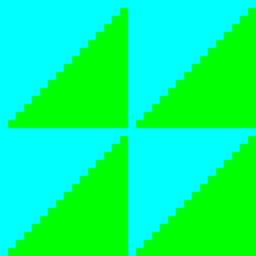
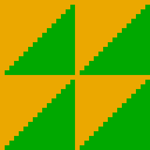
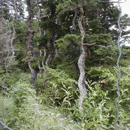
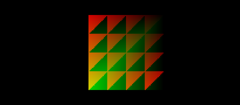
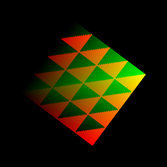
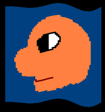
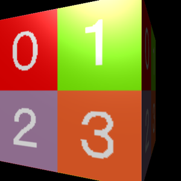

01
ピクセルシェーダーで画像の色を変える
C2_PixelShaderTest
DxLib(Direct3D 11)で、自分のシェーダーを書けるようになるための全 10 回の授業です。
各回は samples/ の動作確認済みのサンプルを 1 つ開いて、読んで、少し書き換えます。
spec/dxlib_d3d11_shader_spec.md)を引く。2D の画面だけで進む(3D が苦手でも入りやすい)



頂点シェーダー



3D モデル




course/templates/ の中のその回のファイルを選ぶ(一覧は templates/README.md。各回のページの「開くサンプル」にも書いてあります)。samples/)のフォルダの中身(src/・shaders/・画像やモデルのファイル)を上書きでコピーする。shaders/ に置き、名前の最後を VS(頂点シェーダー)か PS(ピクセルシェーダー)にする。shaders/DxLibVS.hlsli と shaders/DxLibPS.hlsli は、DxLib が渡してくれる値(カメラの行列・ライトなど)の宣言。書き換えない。register( b4 ))に置く(02 で習う)。struct … INPUT)の並びを疑う(04 で習う)。answers/)があります。解答例は、ビルドして動かし、土台のサンプルと並べた絵を確かめたものだけです(python course/check_answers.py。比べた絵は course/build/<名前>/compare.png)。python course/make_answers.py)。サンプルを直したら作り直してください。images/)は python course/make_images.py で作り直せます(サンプルをビルドして撮る。解答例の画面は check_answers.py の結果を使うので、先にそちらを動かす)。図は各ページの中に SVG で書いてあります。【D3D11】 のコメントにあります。古い解説記事(Direct3D 9 のもの)を見て混乱した生徒への説明に使えます。